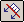
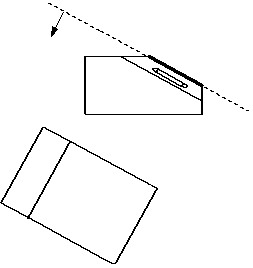
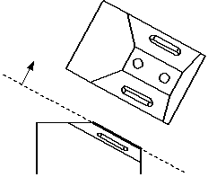

Create an auxiliary view
-
Choose Home tab→Drawing Views group→Auxiliary View

.A representation of the view plane line is attached to the cursor. The auxiliary view will be rotated 90 degrees about the view plane line.
-
Move the cursor around the drawing sheet.
When the cursor locates a linear element, the view plane line attached to the cursor becomes parallel to the element.
-
Do one of the following:
-
Click a located line to define it as the view plane line.
-
Draw a view plane line by clicking two key points in the part view. The new line is automatically defined as the view plane line.
-
-
Position the auxiliary view where you want it, and then click.
Where you place the view determines the direction of rotation of the auxiliary view. The view plane is rotated toward the view location, as shown in the figure.


-
You can create auxiliary views from both principal views and existing auxiliary views.
-
The view plane line and auxiliary view are associative to the principal view. If the geometry in the principal view changes, the view plane line and auxiliary view update.
-
You can modify the view plane line by dragging one of its handles. Use the light blue edit handles to move the caption text, change the arrow line length, and adjust the position of the annotation along the current vector. Use the dark blue edit handle to freely reposition the view plane line.
Example:Handles for the single-arrow view plane line:

Handles for the double-arrow view plane line:
 Note:
Note:The handle colors are defined by the Handle 2 and Handle 3 colors on the Colors tab in the Solid Edge Options dialog box. The default colors are light blue and dark blue.
-
You can use the Drawing View Style list on the Auxiliary View command bar to choose a display style for the auxiliary view plane line. You also can modify the appearance of an existing view plane line using the View Plane Properties dialog box.
-
The Dynamic display option on the Drawing View Wizard tab (Solid Edge Options dialog box) controls whether the drawing view is displayed using VHL preview mode while you fold the views. You can set this option by model type and size. For more information, see Specifying a preview type for drawing views.
Learn more
Auxiliary viewsModifying auxiliary views and view planes
Look up more details
Auxiliary View commandAuxiliary View command bar
Viewing Plane Selection command bar
Viewing Plane Properties dialog box
General tab (Viewing Plane Properties dialog box)
Caption tab (Viewing Plane, Detail Envelope, Cutting Plane Properties dialog box)